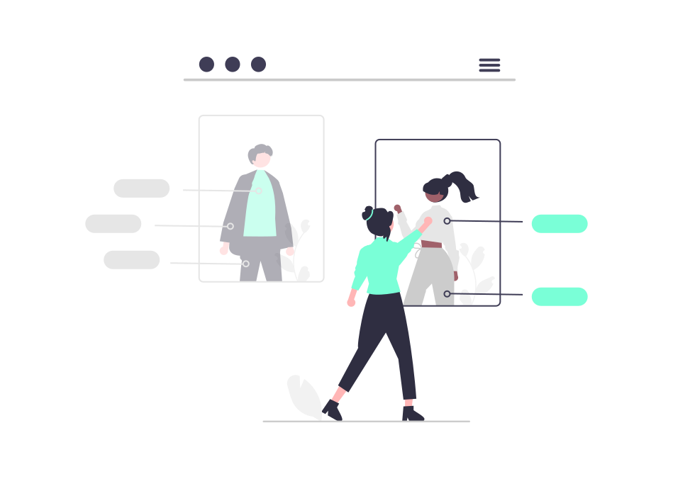

Nuestros servicios
Los más completos del mercado
Especialistas en acción de reclamación de paternidad de aquellos hijos no reconocidos por sus padres. Nos encargamos de la fijación de cuotas alimentarias tanto para hijos como para conyugues.

Juicios
Asesoramos y defendemos de manera discreta y profesional a aquellas personas que viven casos de violencia familiar, abogados especialistas en juicio de familia, civiles y penales
Sucesiones
Llevamos adelante declaratoria de herederos, asesoaramiento y gran conocimiento para resolver todo lo que necesite en estos casos especiales